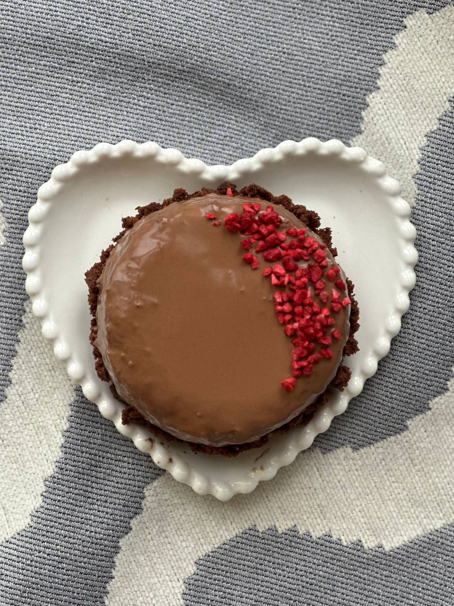
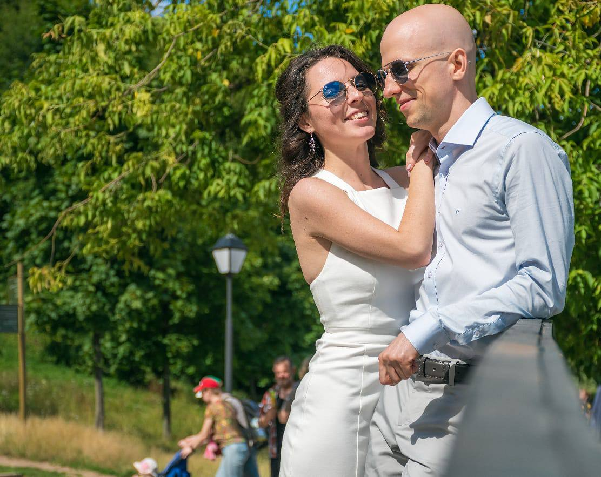

Юлия
«Никакого сахара. Только любовь»
«Никакого сахара. Только любовь»
Быть осознанным — значит быть счастливым. Это не просто слова, это то, как я живу каждый день. Я создала Raw Vegan Club, чтобы доказать: растительная еда может быть яркой, вкусной и настоящей — без компромиссов с телом и совестью.
Я шью вещи своими руками, готовлю торты без единого грамма сахара и верю, что забота о себе начинается с того, что мы кладём в тарелку и надеваем на тело.
Ореховые торты с манго и цитрусовой ноткой, пастила без сахара, гречично-шоколадные батончики, чиа-пудинги. Каждый рецепт — это мой поиск баланса между вкусом и заботой о теле. Ни грамма рафинированного сахара. Ни одного животного ингредиента. Только живые продукты — и много любви.



«Есть, чтобы жить, а не жить, чтобы есть»


Осознанность — это не только про еду. Это про всё, к чему прикасаешься. Я шью вещи так, как готовлю: вдумчиво, из честных материалов, без спешки. Каждая вещь — это разговор между моими руками и тканью, который длится часами.
Плащи из натурального льна, сумки, бельё — ничего лишнего, только то, что хочется носить каждый день и передавать дальше.
Я создала Raw Vegan Club — сообщество из более чем тысячи людей, объединённых одной идеей: питаться осознанно, жить в гармонии с собой и делиться рецептами, которые делают эту жизнь вкуснее. Марафоны рецептов, живые встречи, поддержка каждый день.
Перейти в канал
«В ведах говорится, что два человека встречаются не случайно — их приводит друг к другу карма многих жизней. Любовь — это не чувство, которое приходит и уходит. Это решение. Каждый день. Быть рядом, расти вместе, видеть в другом человеке отражение своей лучшей версии. Счастливая семья — это не идеальные условия. Это двое, которые выбирают друг друга снова и снова».